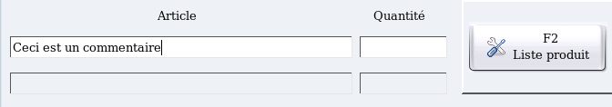
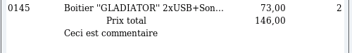

~ Laurux.Pos ~

~ Laurux.Pos ~ |
|
|
|
Saisie d'un commentaire
Pour saisir un commentaire il faut faire F4 lorsque le curseur se trouve dans la zone "Article".

On saisit le commentaire souhaité puis on valide.

La validation de la saisie va générer une nouvelle ligne sur le ticket.
----------------------------------------------------------------------------------------------------------------------